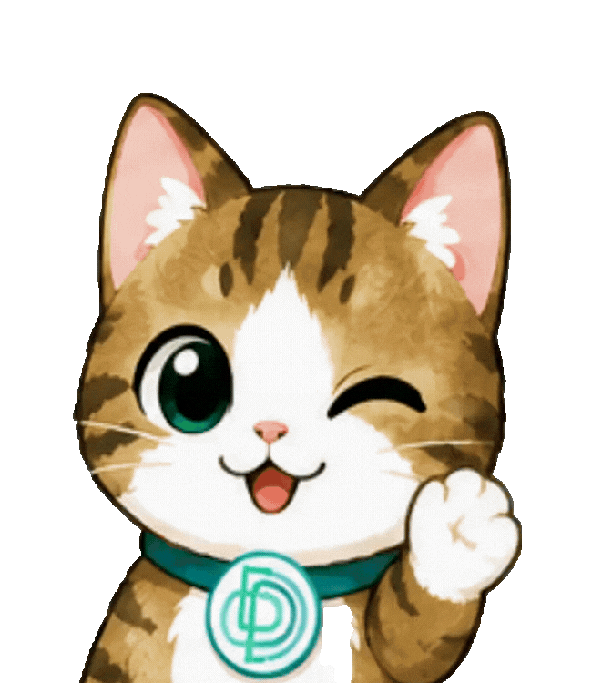

老師在 Word Game 頁指派的三種目標，反映到學生端 Home 的 Word Game 卡片上會長什麼樣。原型（student-redesign.html）目前只做了「分鐘型」一種，另外兩種與「已達標」狀態是本頁提出的寫法，尚未定案。
提案 · 2026-08-13 · 待設計者確認Play a set time each day老師設定「每天玩 N 分鐘」＋ 適用星期。這是唯一已經在原型裡的版本。

進度條 = 今天累計分鐘 ÷ 每日目標，不是整份作業的完成度。催促句用剩餘分鐘數，語氣輕、帶 emoji。
整塊轉綠（框 #A7E8C0、底 #EAFBF0），催促句換成 ✓ Done for today!。不要把橫幅收起來 —— 學生要看得到自己今天做完了。
Complete N stages老師設定「從指派當下起再清 N 關」。相對值：後端存 per-student baseline，前端只顯示後端算好的差距。
「12」是指派之後清掉的關數，不是 Stage 29 這個絕對位置 —— 卡片下半的 Stage 29 / 54 是遊戲進度，兩個數字不同是正常的，別合併。
達標後數字停在 25/25，不繼續往上加（26/25 很怪）。作業還沒到期就繼續留著這塊綠橫幅。
Reach a level / stage老師設定「爬到 HSK N（可指定第 K 關）」。絕對值：直接看學生現在在哪。
進度條＝目前等級的完成度（清完這一級就抵達下一級）。催促句用「這一級還剩幾關」，比「還差 1 級」具體。
第二行帶上關卡（Reach HSK 1 · Stage 30），進度條分母改成目標關卡而不是整級 54 關。
達標後 now 那格顯示實際位置（可能已超過目標），進度條固定滿格。
老師沒指派時整塊 .wg-goal 不渲染，不要留空殼或寫「No goal」—— 卡片回到純遊戲入口的樣子。
實作時每一格都是一個 i18next key；{} 是變數。
| 老師端目標 | 第二行（.wg-goal-txt） |
右側數字（.wg-goal-num） |
進度條分母 | 未達標催促（.wg-goal-nudge） |
已達標（.wg-goal-done） |
|---|---|---|---|---|---|
| Play a set time each day | Play {n} min / day · {days} |
{done}/{n} min today |
當日目標分鐘 | {left} more minutes to finish today! 🔥 |
✓ Done for today! Keep playing if you like. |
| Complete N stages | Clear {n} stages |
{done}/{n} stages |
目標關數（相對 baseline） | {left} stages to go — you've got this! 🔥 |
✓ Goal complete! Nice work. |
| Reach a level | Reach HSK {lv} |
now HSK {cur} · Stage {s} |
目前等級的總關數 | {left} stages left in HSK {cur} 🔥 |
✓ You made it to HSK {lv}! |
| Reach a level · stage | Reach HSK {lv} · Stage {k} |
now HSK {cur} · Stage {s} |
目標關卡 {k} | {left} stages to go 🔥 |
✓ You made it to Stage {k}! |
| 沒有指派 | 整塊 .wg-goal 不渲染 |
||||
reached: Boolean + 差距值）。老師端 Word Game 頁、老師端 Students 頁、學生端這張卡片必須是同一個答案。15/15 之後可以繼續玩但顯示不變）。